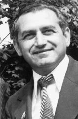

Страницы авторов "Тёмного леса"
Страница "Литературного Кисловодска"
Пишите нам! temnyjles@narod.ru
Ставропольский писатель, известный по всей России и Греции родился в г.Кисловодске, в многодетной крестьянской семье. Здесь, на Ставрополье, корни его дедов и прадедов.
В.М. Янгазов член союза писателей СССР, автор книг общим тиражом 1,5 мл. экз., изданных на Ставрополье и в Москве. Номинант энциклопедий: "Энциклопедия Советских греков", энциклопедия "Греки СНГ", энциклопедия "Известные греки Ставрополья", Энциклопедия "Кто есть кто" ("Who is who" Греция). Владимир Макарович - лауреат премии Германа Лопатина, ветеран Краснознамённого Черноморского флота в звании капитан-лейтенанта. Награждён Правительственными наградами Советского Союза. За многолетнюю и плодотворную журналистскую деятельность удостоен многочисленных грамот Союза журналистов СССР, государственного комитета СССР по телевидению и радиовещанию, грамотами ЦК ВЛКСМ и ЦК ЛКСМ Украины и Ставропольского крайкома КПСС и т.п., за успешное патриотическое воспитание молодого поколения, Владимир Макарович удостоен благодарственных писем и грамот.

12 Апреля 2013 г. исполнилось три года со дня трагической гибели, моего любимого папочки, известного Ставропольского писателя по всей России и Греции В.М.Янгазова..
Я, дочь Ирина, хочу выразить благодарность любимому папочке за своё счастливое детство и юность; Отец мой был строгим, честным и требовательным, но и в то же время любящим и заботливым, он был и есть пример и гордость для нас и всего подрастающего поколения Он привил своим детям уважение и почтение к старшим, слабым всегда помогать в нужде, он завещал нам любить труд, чтоб мы не стали иванами, не помнящими родства, быть преданными своим предкам, своему народу, любимой Родине.
Посвящаю свой стих годовщине смерти моего любимого папочки!
И.М.Кондраков, С.И.Ростовский. Памяти писателя-журналиста В.М.Янгазова
Владимир Янгазов. Скальпель жизни (о хирурге Иване Харлампиевиче Товстиади)
Страница "Литературного Кисловодска"
Страницы авторов "Литературного Кисловодска"
Последнее изменение страницы 28 Nov 2021
{kind=link}